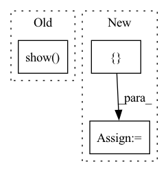

Pattern ID :22514
Before Change
return fig,
_ = animation.FuncAnimation(fig, animate, frames=num_frames * 100, interval=100)
plt.show(block=True)
if __name__ == "__main__":
app.run(main)After Change
def main(unused_argv):
path_prefix = "E:\\meshgraphnets\\output\\flag_simple\\"
path_suffix = "rollout\\rollout.pkl"
rollout_paths = [ "Fri-Feb-11-20-42-42-2022"In pattern: SUPERPATTERN
Frequency: 5
Non-data size: 3
Instances Fragment ID: 71141727
Project Name: wwmark/meshgraphnets
Commit Name: eed20dd8a346a7fc237279d136f08b426d5d27d4
Time: 2022-02-11
Author: ruoheng.ma@gmail.com
File Name: plot_cloth.py
M Class Name: AnonimousClass
N Class Name: AnonimousClass
M Method Name: main(1)
N Method Name: main(1)
M Parent Class:
N Parent Class:
M File Name: plot_cloth.py
N File Name: plot_cloth.py
M Start Line: 45
M End Line: 87
N Start Line: 47
N End Line: 105
Before Change
window.setLabel("left", "dice")
window.setLabel("bottom", "image")
window.show()
After Change
avg_corrected = moving_average(corrected_dice, rolling_n)
x = list(range(len(corrected_dice)))
y = corrected_dice
args = [ x, y Fragment ID: 71141721
Project Name: abe404/root_painter
Commit Name: 4ef206ee3c5549bce4e2934f309cddaf0ab5c53e
Time: 2022-07-22
Author: abe@abesmith.co.uk
File Name: painter/src/main/python/plot_seg_metrics.py
M Class Name: AnonimousClass
N Class Name: AnonimousClass
M Method Name: plot_dice_metric_qtgraph(3)
N Method Name: plot_dice_metric_qtgraph(3)
M Parent Class:
N Parent Class:
M File Name: painter/src/main/python/plot_seg_metrics.py
N File Name: painter/src/main/python/plot_seg_metrics.py
M Start Line: 88
M End Line: 96
N Start Line: 83
N End Line: 114
Before Change
board_log=logger,
step=epoch)
plt.show()
experiment.log_metric("learning/test_loss", losses.val, epoch)
logger.add_scalar("learning/test_loss", losses.val, epoch)
return losses.avgAfter Change
losses = eval.MetricMeter()
inputs = []
outputs = []
tars = []
Eval mode.
with torch.no_grad(): Fragment ID: 71141723
Project Name: turagalab/decode
Commit Name: 889789c97eb30b2a757b6ab589c7472589f22f2a
Time: 2019-05-14
Author: gitdev@LRM.photo
File Name: deepsmlm/neuralfitter/train_test.py
M Class Name: AnonimousClass
N Class Name: AnonimousClass
M Method Name: test(8)
N Method Name: test(8)
M Parent Class:
N Parent Class:
M File Name: deepsmlm/neuralfitter/train_test.py
N File Name: deepsmlm/neuralfitter/train_test.py
M Start Line: 178
M End Line: 227
N Start Line: 176
N End Line: 217
Before Change
anima = animation.FuncAnimation(fig, animate, frames=num_frames * 10, interval=100)
// writervideo = animation.FFMpegWriter(fps=30)
// anima.save("ani.mp4", writer=writervideo)
plt.show(block=True)
if __name__ == "__main__":
app.run(main)After Change
def main(unused_argv):
path_prefix = "E:\\meshgraphnets\\output\\deforming_plate\\"
path_suffix = "rollout\\rollout.pkl"
rollout_paths = [ "Tue-Jan-25-17-50-18-2022\\1", "Fri-Jan-28-13-53-24-2022\\1" Fragment ID: 71141717
Project Name: wwmark/meshgraphnets
Commit Name: cba01dffc57412c5296a68c40c90a417fa3fc69b
Time: 2022-01-29
Author: ruoheng.ma@gmail.com
File Name: plot_deform.py
M Class Name: AnonimousClass
N Class Name: AnonimousClass
M Method Name: main(1)
N Method Name: main(1)
M Parent Class:
N Parent Class:
M File Name: plot_deform.py
N File Name: plot_deform.py
M Start Line: 33
M End Line: 126
N Start Line: 35
N End Line: 136
Before Change
display_html(f"{bold_hr}<h2>Additional Outputs</h2>", raw=True)
if display_table:
for i, r in enumerate(display_table):
r.show(show_conditions=False, unique_id=unique_id)
if i < len(display_table) - 1:
display_html(light_hr, raw=True)
else:
display_html("<p>No outputs to show.</p>", raw=True)After Change
checks_with_conditions: List[CheckResult] = []
checks_wo_conditions_display: List[CheckResult] = []
checks_w_condition_display: List[CheckResult] = []
others_table = []
for result in results:
if isinstance(result, CheckResult): Fragment ID: 71141714
Project Name: deepchecks/deepchecks
Commit Name: 442ad6d98004e804ad564a3f2de8014fdaf49a69
Time: 2022-01-17
Author: jonatan.lib@gmail.com
File Name: deepchecks/base/display_suite.py
M Class Name: AnonimousClass
N Class Name: AnonimousClass
M Method Name: display_suite_result(2)
N Method Name: display_suite_result(2)
M Parent Class:
N Parent Class:
M File Name: deepchecks/base/display_suite.py
N File Name: deepchecks/base/display_suite.py
M Start Line: 73
M End Line: 158
N Start Line: 216
N End Line: 291